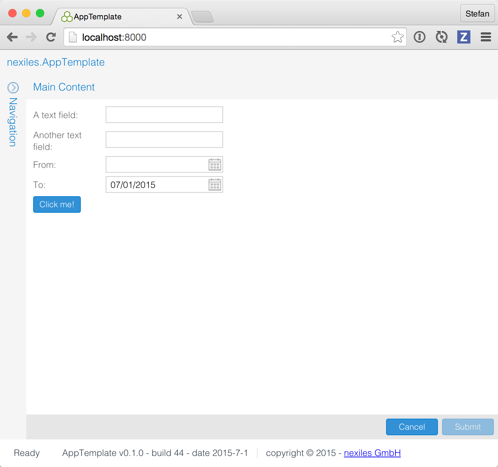

Introduction¶
What?¶
This is a the nexiles app template which we use to develop apps for PTC Windchill using our nexiles gateway interface.
This template contains code and build scripts, and this documentation.
Features¶
Note
These are features of the template project, not nexiles gateway features.
- Fully automated build
- Beautiful documentation
- Live reloading during development for instant feedback
- Hooks and examples for accessing PTC Windchill using nexiles gateway
Why?¶
Usually, PTC Windchill extensions (or customizations) are coded in Java, and the UI is done by customizing the PTC Windchill UI directly.
While this is fine for one-off projects, we find that the mainenance cost of this approach is too high.
Using nexiles.gateway, we separate UI (front-end) from business logic (back-end), and thus free ourselves (and the customer) from the restrictions and maintenance overhead imposed by the normal customization approach.
Additionally, using nexiles.gateway allows us to use the dynamic programming language Python, which allows to use a more agile and interactive development process. This gives us and our customers a great advantage wrt. time-to-market and development costs, as well as very quick iteration cycles.
For more information, contact us.
Tools, Prerequisites¶
This template application uses ExtJS for the UI, and the code is developed in CoffeeScript. The documentation is written and published using Sphinx. The build automation uses Fabric, a build tool for Python.
The CoffeeScript to JavaScript compiling, live reloading etc uses Grunt.
To sum up, the prerequisites for building this project are:
And, if you want to actually test against PTC Windchill:
Access to PTC Windchill with installed nexiles gateway. You do NOT need file system or administrator rights. A normal user account is enough. You need to be able to create and iterate documents (WTDocuments).
For more information, contact us.